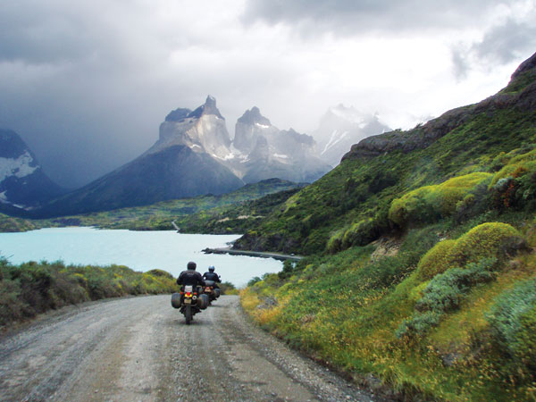
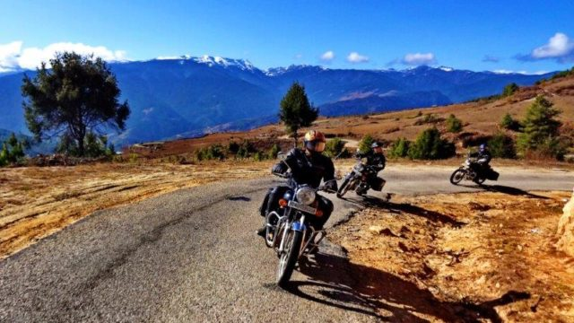

Zwiedzanie świata na motocyklu to wspaniała sprawa
O tym, że podróż motocyklem pozwala na zupełnie inne doświadczenie przestrzeni, nie trzeba nikogo przekonywać. Wiatr we włosach i wolność w tym kontekście brzmią już tak banalnie, że przejdziemy od razu do propozycji najciekawszych tras na wyprawy motocyklowe na świecie.
Są takie trasy na świecie, których już sam widok pobudza wyobraźnię. W głowie zaczynamy sobie układać scenariusze tego, jak mógłby wyglądać przejazd przez nie. Często marzenia te są poddawane szybkiej realizacji. I wtedy pojawiają się pytania: gdzie konkretnie pojechać, by się nie zawieść? Oto najpopularniejsze trasy wśród motocyklistów.
